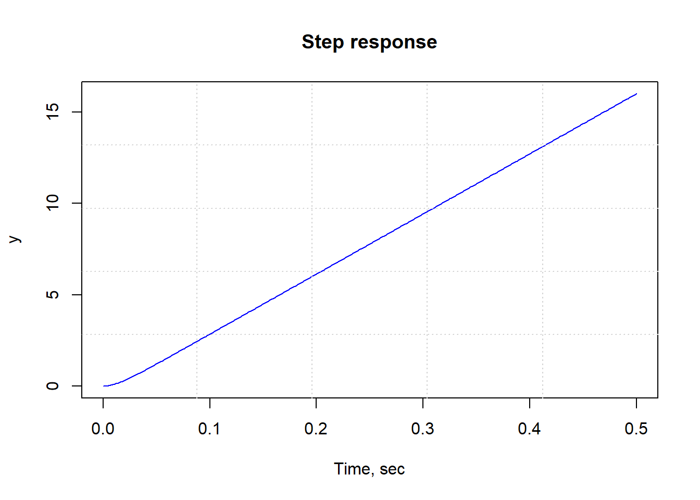

Space Exploration has always captivate the attention of all human being from women to men, from kids to adults. However, going to space is easier than developing the best vehicule to reach space. In fact, in order to conduct activity in space wether send human or robots, Aerospace Engineers need to come up with innovative ideas not only to build the spacecraft but mostly to stabilize it in order to allow it to perform its mission. For example, a spacecraft designed to capture an asteroids, mining it, and bringing its valuable resource back to Earth need a strong control system to be stable and perform its mission safely. In this project, I assumed a spacecraft with a non stable controller and design a new controller to stabilize the spacecraft.
I use the Control package available in the library. Other than that I created all the rest of the data by myself. I firstly assume a controller for the system I called “Controller” and tried to see if that controller could stabilize the spacecraft by ploting its step response curve. After being sure that the system is unstable with that controller by looking at the poles of the system and the step response curve, I designed a controller I called “Controller2” with some parameters I choosed to make sure that it can stabilize the system of the spacecraft. I ploted the step response my the controller I designed to show that it can stabilize the system.
#Load any required packages in a code chunk (you may need to install some packages):
library(control)##
## Attaching package: 'control'## The following object is masked from 'package:stats':
##
## step## The following object is masked from 'package:base':
##
## append##Background
A transfer function is a frequency domain, i.e. the ratio of the output to the input of the control system.
#Example of Transfer Function
a <- 10; b <- 7; k <- 3
TF("1/(a*s^2 + b *s + k)")##
## y1:
## 1
## - - - - - - - - - - -
## 10 s^2 + 7 s + 3
##
##
## Transfer Function: Continuous time modelSpacecraft’s natural controller Transfer function for example originally assumed that it can stabilize the system but depending of changes it may need to be tested to see if it can stabilize the system or not
e <- 0.000003;
m <- 0.000003;
p <- 0.03;
d <- 4;
w <- 0.000003;
Controller <- TF("p/(s*((e*s + m)*(w*s + d) + p^2))")
time <- seq(0,0.2,0.001)stepplot(Controller, t = time)
#Is the system Stable?
From the above plot showing the system’s step response, it is clear that the system is unstable. The Stability of the system can also be determine by looking at the poles of the system.
pole(Controller)## [,1]
## [1,] 0.000000e+00
## [2,] -1.333258e+06
## [3,] -7.600428e+01As shown above, one of the poles of the open-loop transfer function is on the imaginary axis while the other two poles are in the left half of the complex s-plane. So the system is not stable.
Since the system is not stable, we need to We can add feedback controller and then investigate the system’s closed-loop step response for stability
#Closed-Loop Response of the Controller
Controller2<- feedback(Controller, 1)
print(Controller2)##
## y1:
## 0.03
## - - - - - - - - - - - - - - - - - - - - - - - - - - -
## 9e-12 s^3 + 1.200001e-05 s^2 + 0.000912 s + 0.03
##
##
## Transfer Function: Continuous time model#Plot
stepplot(Controller2, t = time)The above closed-loop step response shows that the addition of feedback has stabilized the system.
#The Damping an dNatural Frequency Data
damp(Controller2)##
## Eigenvalue Damping Freq. (rad/s) Freq. (Hz).
## ---------- ------- ------------- -----------
## -38.00 + 32.50j 0.76 50.00## Warning in sprintf("%-10.2f", omegahz[i]): imaginary parts discarded in coercion## 0.39
## -38.00 - 32.50j 0.76 50.00## Warning in sprintf("%-10.2f", omegahz[i]): imaginary parts discarded in coercion## 0.39
## -1333258.33 + 0.00j 1.00 1333258.33## Warning in sprintf("%-10.2f", omegahz[i]): imaginary parts discarded in coercion## 0.00## $omega
## [,1]
## [1,] 5.000141e+01
## [2,] 5.000141e+01
## [3,] 1.333258e+06
##
## $zeta
## [1] 0.7600026 0.7600026 1.0000000R is a suitable tool not only to explore the stability of a system but also to design a controller that will be able to stabilize the spacecraft. Most of the Aerospace Engineers use Matlab which is a software with lot of tools for spacecraft’s controller design in term of ploting the Bode diagram, ploting the compensated and uncompensated system, getting the gain margin and the phase margin,..but I am sure R is also a good tool and could perform some of the work we do in Aerospace using Matlab.
Ubah B. C., (2017), A Control System Toolbox, 0.2.5